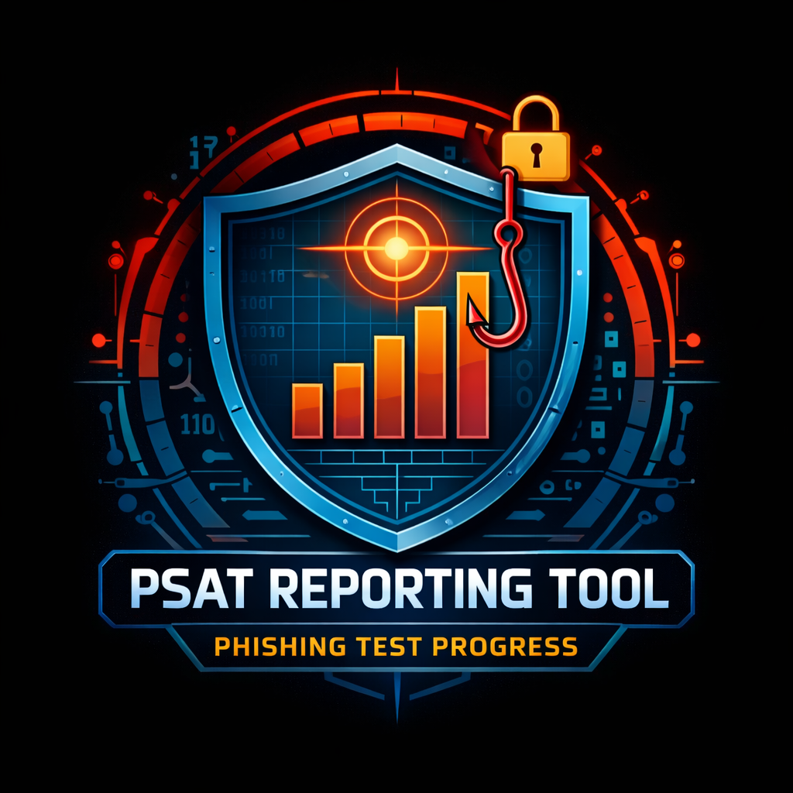
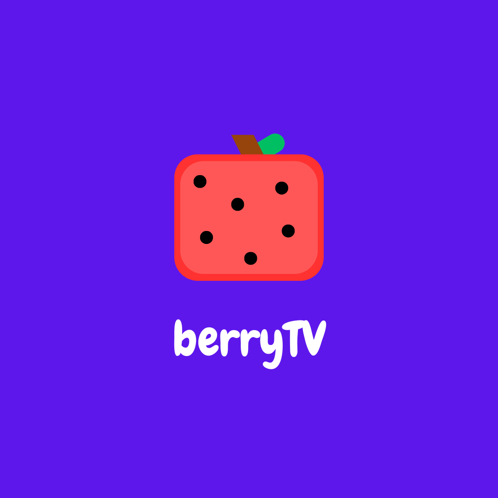
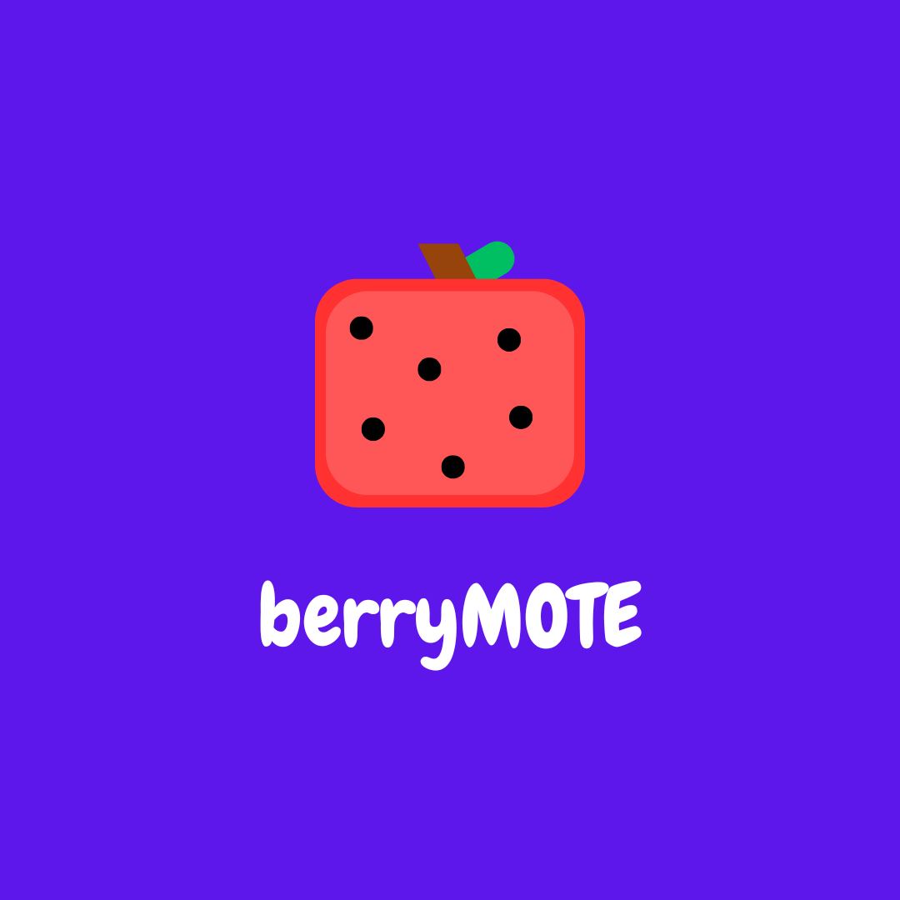
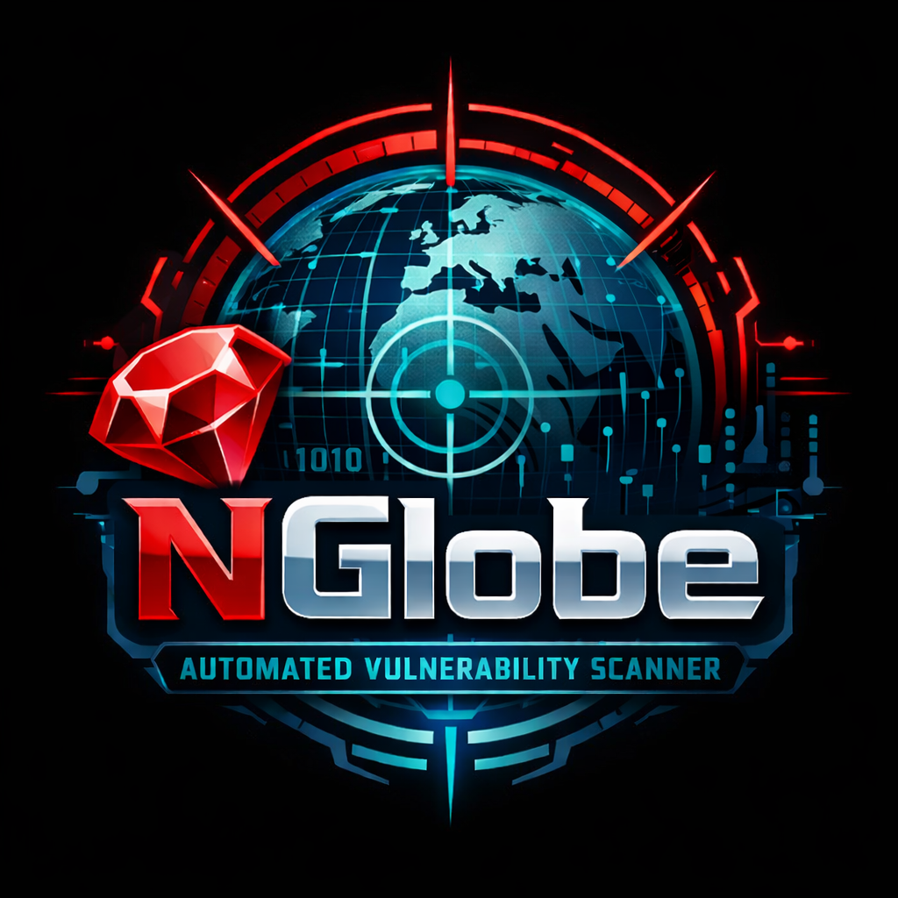
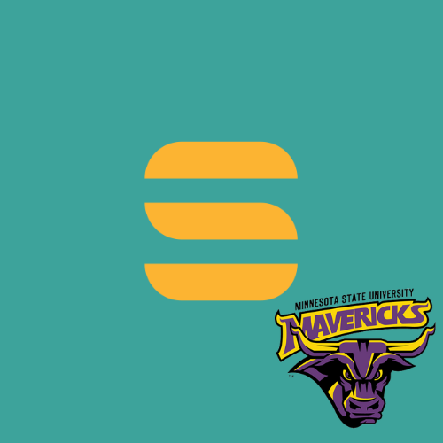
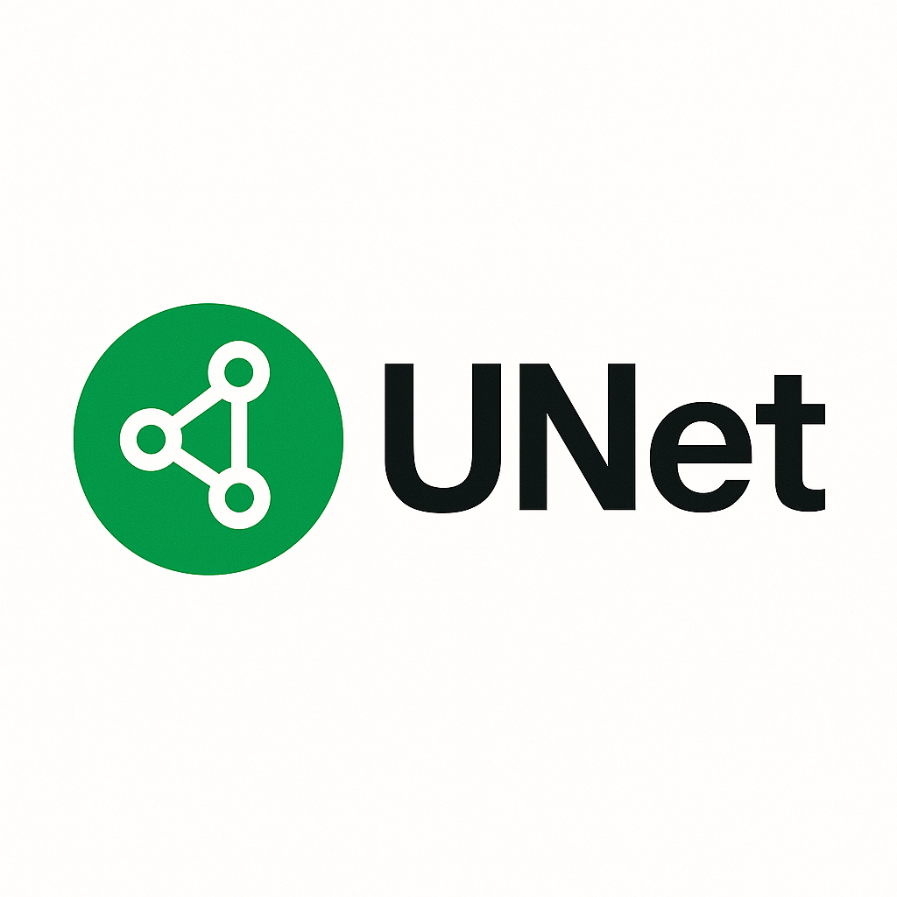

Welcome to Tyson's page!
Minesweeper
What I Do
- 💻 Fullstack Software Development
- 🔐 Cybersecurity
- 📊 Data Visualization
Some of My Skills
| Languages | Tools |
|---|---|
| Python | Linux |
| Java | Git & Github |
| C/C++/C# | VirtualBox |
| Ruby | Azure |
| SQL | Oracle SQL |
About
Tyson Shannon
I am a software developer from Calgary, Alberta pursuing work in the Toronto area. I have a B.S. in Computer Information Technology, a minor in Mathematics, and a certificate in Software Development from Minnesota State University, Mankato. I have a strong background in software development, cybersecurity, and data visualization, gained through three summers as a cybersecurity intern. I enjoy building systems that are secure, efficient, and transparent. I'm especially interested in emerging technologies, AI, decentralized platforms, and turning complex data into clear, actionable insights. As a former NCAA D2 distance runner, I bring the same discipline, perseverance, and goal-oriented mindset to software development and problem-solving that I learned on the track.
Skills
- Coding Languages: Python, Java, C, C++, Ruby, GO, SQL, KQL, R, MATLAB
- Technologies: GitHub, Docker, Linux, Kali Linux, Azure, Jira, Sentinel, Defender, Red Canary, Rapid7, Cortex XDR, CloudFlare, Forescout, Jupyter, Power BI, RStudio, MySQL, Visual Studio Code, VirtualBox, TensorFlow
- Abilities: Incident response, data analysis & visualization, technical documentation, team collaboration, learning new technologies & languages
Work Experience
Pembina Pipeline Corporation | May 2023 - Aug 2025 | 12 months total
Cyber Security Summer Intern
- Learned about common vulnerabilities and exploits, the MITRE ATT&CK framework, and cyber/software best practices.
- Developed a python visualization script for our phishing simulation data to solve an integration issue that would have put us 6 months behind schedule. It is now used monthly by management.
- Developed four KQL dashboards in Microsoft Sentinel for monthly reporting to higher ups.
- Participated as a purple team member in a penetration testing engagement.
- Conducted incident responses on several non-simulated attacks, utilizing OSINT and CSINT to gather information and respond accordingly.
- Wrote twenty knowledge base articles for many of our company's cyber technologies and practices to help train AI agents and new hires.
- Developed our team's AI support bot in Copilot Studio to ease support tickets off our analysts and improve workload balance.
- Developed skills in a number of tools including Azure, Sentinel, Defender, Red Canary, and Jira.
Education
Minnesota State University, Mankato | Dean's List | Sep 2022 - Expected May 2026
- Bachelor of Science in Computer Information Technology
- Minor in Mathematics
- Certificate in Software Development
- Activities: NCAA D2 Track and Cross Country, Cyber Security Association, Maverick Involvement Team, ColorStack
- Relevant Classes: Data Structures, Algorithms, Computer Architecture, Database, Networking, Software Quality Assurance and Testing, Info. Sec., Info. Warfare, Machine Learning
Projects

PSAT-Reporting-Tool
Using your Proofpoint PSAT API this code will develop a high level report/chart showing your phishing test progress over five years
View on GitHub
berryTV
An application to turn your Raspberry Pi into a customizable smart TV
View on GitHub
berryMOTE
A remote controller for you computer hosted on a local server and accessed by any browser on any device on the same network (From berryTV)
View on GitHub
NGlobe
A cyber security tool to automate the nmap scanning of a list of domain assets. Outputs a list of only the vulnerable domain assets (if any) to allow for further investigation.
View on GitHub
Internship-Bot
Slack bot that scrapes for internship roles and posts it to the MNSU ColorStack Slack channel.
View on GitHub
UNet
Open source, decentralized, creator first video sharing platform (Personal Research Project)
View on GitHubContact

*public email checked irregularly, messages with files and links will be deleted